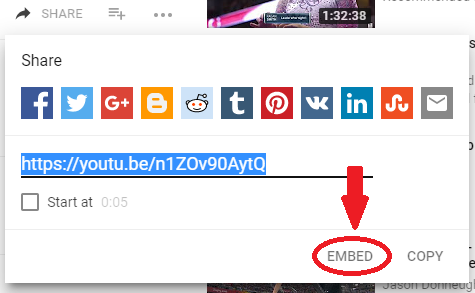
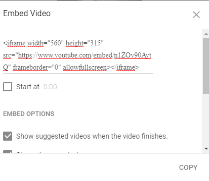

Taggen for å legge til video er < video > < /video>, mens selve filmen legges inn i < source >: på samme måte som < figure > og < img > for bilder:
< video >
< source src = "filnavn.filendelse" type = "video/mp4">
< /video >
I tillegg til src og type har vi andre attributter det kan være aktuelt å inkludere:
autoplay - sørger for at filmen spilles automatisk når siden lates
controls - legger inn play/pause/lyd
width eller height - styrer størrelsen
loop - gjentar avspilling
muted - starter uten lyd
Så vi kan f.eks. legge ut en film som spiller automatisk, ikke har kontroller og looper:
< video width="1200px" autoplay loop >
< source src="media/flikkflakk.mp4" type="video/mp4" >
Din nettleser støtter ikke videoelementet
< /video >
Når vi legger til filmer som ligger på egen maskin, må vi passe på filadressen som vanlig. Av hensyn til den som bruker siden, legger vi på controls. Dersom vi ikke spesifiserer annet, legges filmene inline (ved siden av hverandre).
I html har vi mulighet til å legge til youtubefilmer direkte i stedet for kun å legge ut en link til filmen:
 
Resultatet blir da
(Så kan vi bli sinte på alle som filmer i stående format....)
Taggen for å legge til lyd er < audio > og brukes, som film, sammen med < source > for å sette inn lydfiler:
< audio controls >
< source src="media/Beatles_Twist_and_Shout.mp3" type = "audio/mpeg">
Din nettleser støtter ikke audioelementet
< /audio >
1. Fortsett på nettsiden du lagde med bilder.
a) Sett inn en film. Hvis du ikke har noen liggende på pcen din kan du finne både filmer og lydklipp her
b) Bygg inn en film du finner på youtube
c) Sett inn et lydklipp. Undersøk hva som skjer hvis du prøver å sette inn attributtet autoplay for lydfilen og hva som skjer hvis du ikke legger ved controls.